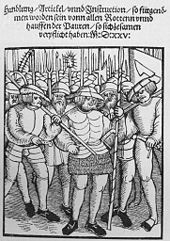
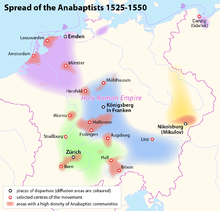

Anabaptism (from Neo-Latin anabaptista,[1] from
the Greek ἀναβαπτισμός: ἀνά- "re-"
and βαπτισμός "baptism",[1] German: Täufer,
earlier also Wiedertäufer)[a] is
a Christian
movement which traces its origins to the Radical
Reformation.
Among the Anabaptist groups still
present are mainly the Amish, Brethren, Hutterites and Mennonites.
In the 21st century, there are large cultural differences between
assimilated Anabaptists, who do not differ much from evangelicals,
and traditional groups like the Amish, the Old
Colony Mennonites, the Old
Order Mennonites, Old
Order River Brethren, the Hutterites and the Old
German Baptist Brethren.[2]
The early Anabaptists formulated their
beliefs in a confession
of faith called the Schleitheim
Confession. In 1527, Michael
Sattler presided over a meeting at Schleitheim (in
Schaffhausen canton, on the Swiss-German border), where Anabaptist
leaders drew up the Schleitheim Confession of Faith (doc. 29).
Sattler was arrested and executed soon afterwards. Anabaptist groups
varied widely in their specific beliefs, but the Schleitheim
Confession represents foundational Anabaptist beliefs as well as any
single document can.[3][4]
Anabaptists believe that baptism is
valid only when candidates freely confess their faith in Christ and
request to be baptized. This believer's
baptism is opposed to baptism
of infants, who are not able to make a conscious decision to be
baptized. Anabaptists are those who are in a traditional line with
the early Anabaptists of the 16th century. Other Christian groups
with different roots also practice believer's baptism, such as Baptists,
but these groups are not Anabaptist. The Amish, Hutterites, and
Mennonites are direct descendants of the early Anabaptist movement. Schwarzenau
Brethren, River
Brethren, Bruderhof,
and the Apostolic
Christian Church are considered later developments
among the Anabaptists.[2][5][6]
The name Anabaptist means "one who
baptizes again". Their persecutors named them this, referring to the
practice of baptizing persons when they converted or declared their
faith in Christ even if they had been baptized as infants, and many
prefer to call themselves "Radical
Reformers".[7] Anabaptists
require that baptismal candidates be able to make a confession of
faith that is freely chosen and so rejected baptism of infants. The
New Testament teaches to repent and then be baptized, and infants
are not able to repent and turn away from sin to a life of following
Jesus. The early members of this movement did not accept the name
Anabaptist, claiming that infant baptism was not part of scripture
and was therefore null and void. They said that baptizing
self-confessed believers was their first true baptism:
I have never taught
Anabaptism. ... But the right baptism of Christ, which is
preceded by teaching and oral confession of faith, I teach, and
say that infant baptism is a robbery of the right baptism of
Christ.
Anabaptists were heavily persecuted by
state churches, both Magisterial
Protestants and Roman
Catholics, beginning in the 16th century and continuing
thereafter, largely because of their interpretation of scripture,
which put them at odds with official state church interpretations
and local government control. Anabaptism was never established
by any state and therefore never enjoyed any
associated privileges. Most Anabaptists adhere to a literal
interpretation of the Sermon on the Mount in
Matthew 5–7, which teaches against hate, killing, violence, taking
oaths, participating in use of force or any military actions, and
against participation in civil government. Anabaptists view
themselves as primarily citizens of the kingdom of God, not of
earthly governments. As committed followers of Jesus, they seek to
pattern their life after his.
Some former groups who practiced
rebaptism, now extinct, believed otherwise and complied with these
requirements of civil society.[b] They
were thus technically Anabaptists, even though conservative Amish,
Mennonites, Hutterites, and many historians consider them outside
true biblical Anabaptism. Conrad
Grebel wrote in a letter to Thomas
Müntzer in 1524:
True Christian believers are sheep among
wolves, sheep for the slaughter ... Neither do they use worldly
sword or war, since all killing has ceased with them.[9]
Origins[edit]
(16th century)
(11th century)
-
(Not shown are non-Nicene, nontrinitarian,
and some restorationist denominations.)
Medieval
forerunners[edit]
Anabaptists are considered to have
begun with the Radical
Reformation in the 16th century, but historians
classify certain people and groups as their forerunners because of a
similar approach to the interpretation and application of the Bible.
For instance, Petr
Chelčický, a 15th-century Bohemian reformer,
taught most of the beliefs considered integral to Anabaptist
theology.[10] Medieval
antecedents may include the Brethren
of the Common Life, the Hussites,
Dutch Sacramentists,[11][12] and
some forms of monasticism.
The Waldensians also
represent a faith similar to the Anabaptists.
Medieval dissenters and Anabaptists
who held to a literal interpretation of the Sermon on the Mount
share in common the following affirmations:
- The believer must not swear
oaths or refer disputes between believers to law-courts for
resolution, in accordance with 1
Corinthians 6:1–11.
- The believer must not bear
arms or offer forcible resistance to wrongdoers, nor wield the
sword. No Christian has the jus
gladii (the right of the sword). Matthew
5:39
- Civil government (i.e. "Caesar")
belongs to the world. The believer belongs to God's kingdom, so
must not fill any office nor hold any rank under government,
which is to be passively obeyed. John
18:36 Romans
13:1–7
- Sinners or unfaithful ones are
to be excommunicated, and excluded from the sacraments and from
intercourse with believers unless they repent, according to 1
Corinthians 5:9–13 and Matthew
18:15 seq., but no force is to be used towards them.
Zwickau prophets and the German Peasants' War[edit]

Twelve Articles of the Peasants pamphlet of 1525
On December 27, 1521, three
"prophets" appeared in Wittenberg from Zwickau who
were influenced by (and, in turn, influencing) Thomas
Müntzer—Thomas Dreschel, Nicholas
Storch, and Mark Thomas Stübner. They preached an apocalyptic,
radical alternative to Lutheranism. Their preaching helped to stir
the feelings concerning the social crisis which erupted in the German
Peasants' War in southern Germany in 1525 as a
revolt against feudal oppression. Under the leadership of Müntzer,
it became a war against all constituted authorities and an attempt
to establish by revolution an ideal Christian commonwealth, with
absolute equality among persons and the community of goods. The
Zwickau prophets were not Anabaptists (that is, they did not
practise "rebaptism"); nevertheless, the prevalent social inequities
and the preaching of men such as these have been seen as laying the
foundation for the Anabaptist movement. The social ideals of the
Anabaptist movement coincided closely with those of leaders in the
German Peasants' War. Studies have found a very low percentage of
subsequent sectarians to have taken part in the peasant uprising.
Views on origins[edit]
Research on the origins of the
Anabaptists has been tainted both by the attempts of their enemies
to slander them and by the attempts of their supporters to vindicate
them. It was long popular to classify all Anabaptists as Munsterites
and radicals associated with the Zwickau prophets, Jan
Matthys, John
of Leiden, and Thomas Müntzer. Those desiring to correct this
error tended to over-correct and deny all connections between the
larger Anabaptist movement and the most radical elements.
The modern era of Anabaptist
historiography arose with Roman Catholic scholar Carl
Adolf Cornelius' publication of Die
Geschichte des Münsterischen Aufruhrs (The
History of the Münster Uprising) in 1855. Baptist historian Albert
Henry Newman (1852–1933), who Harold
S. Bender said occupied "first position in the
field of American Anabaptist historiography", made a major
contribution with his A History of Anti-Pedobaptism (1897).
Three main theories on origins of the
Anabaptists are the following:
- The movement began in a single
expression in Zürich and
spread from there (Monogenesis);
- It developed through several
independent movements (polygenesis);
and
- It was a continuation of true
New Testament Christianity (apostolic
succession or church perpetuity).
Monogenesis[edit]
A number of scholars (e.g. Harold S.
Bender, William Estep, Robert Friedmann)[15] consider
the Anabaptist movement to have developed from the Swiss
Brethren movement of Conrad
Grebel, Felix
Manz, George
Blaurock, et al. They generally argue that Anabaptism had its
origins in Zürich,
and that the Anabaptism of the Swiss Brethren was transmitted to
southern Germany, Austria, the Netherlands, and northern Germany,
where it developed into its various branches. The monogenesis theory
usually rejects the Münsterites and other radicals from the category
of true Anabaptists. In
the monogenesis view the time of origin is January 21, 1525, when
Conrad Grebel baptized George Blaurock, and Blaurock in turn
baptized several others immediately. These baptisms were the first
"re-baptisms" known in the movement. This
continues to be the most widely accepted date posited for the
establishment of Anabaptism.
Polygenesis[edit]
James M. Stayer, Werner
O. Packull, and Klaus
Deppermann disputed the idea of a single origin of
Anabaptists in a 1975 essay entitled "From Monogenesis to
Polygenesis", suggesting that February 24, 1527, at Schleitheim is
the proper date of the origin of Anabaptism. On this date the Swiss
Brethren wrote a declaration of belief called the Schleitheim
Confession.[19][page needed] The
authors of the essay noted the agreement among previous Anabaptist
historians on polygenesis, even when disputing the date for a single
starting point: "Hillerbrand and Bender (like Holl and Troeltsch)
were in agreement that there was a single dispersion of Anabaptism
..., which certainly ran through Zurich. The only question was
whether or not it went back further to Saxony."[19]: 83 After
criticizing the standard polygenetic history, the authors found six
groups in early Anabaptism which could be collapsed into three
originating "points of departure": "South German Anabaptism, the
Swiss Brethren, and the Melchiorites". According
to their polygenesis theory, South German–Austrian Anabaptism "was a
diluted form of Rhineland
mysticism", Swiss Anabaptism "arose out of Reformed congregationalism",
and Dutch Anabaptism was formed by "Social unrest and the
apocalyptic visions of Melchior
Hoffman". As examples of how the Anabaptist movement was
influenced from sources other than the Swiss Brethren movement,
mention has been made of how Pilgram Marpeck's Vermanung of
1542 was deeply influenced by the Bekenntnisse of
1533 by Münster theologian Bernhard
Rothmann. Melchior Hoffman influenced the Hutterites when they
used his commentary on the Apocalypse shortly after he wrote it.
Others who have written in support of
polygenesis include Grete
Mecenseffy and Walter Klaassen, who established
links between Thomas Müntzer and Hans Hut. In another work,
Gottfried Seebaß and Werner Packull showed the influence of Thomas
Müntzer on the formation of South German Anabaptism. Similarly,
author Steven Ozment linked Hans
Denck and Hans
Hut with Thomas Müntzer, Sebastian
Franck, and others. Author Calvin Pater showed how Andreas
Karlstadt influenced Swiss Anabaptism in various
areas, including his view of Scripture, doctrine of the church, and
views on baptism.
Several historians, including Thor
Hall,[21] Kenneth
Davis,[22] and
Robert Kreider,[23] have
also noted the influence of Humanism on
Radical Reformers in the three originating points of departure to
account for how this brand of reform could develop independently
from each other. Relatively recent research, begun in a more
advanced and deliberate manner by Andrew P. Klager, also explores
how the influence and a particular reading of the Church
Fathers contributed to the development of
distinctly Anabaptist beliefs and practices in separate regions of
Europe in the early 16th century, including by Menno
Simons in the Netherlands, Conrad Grebel in
Switzerland, Thomas Müntzer in central Germany, Pilgram Marpeck in
the Tyrol, Peter Walpot in Moravia, and especially Balthasar
Hubmaier in southern Germany, Switzerland, and Moravia.
Apostolic
succession[edit]
Baptist successionists have, at times, pointed to
16th-century Anabaptists as part of an apostolic
succession of churches ("church perpetuity") from
the time of Christ.[26] This
view is held by some Baptists, some Mennonites, and a number of
"true church" movements.[c]
The opponents of the Baptist
successionism theory emphasize that these non-Catholic groups
clearly differed from each other, that they held some heretical
views,[d] or
that the groups had no connection with one another and had origins
that were separate both in time and in place.
A different strain of successionism is
the theory that the Anabaptists are of Waldensian origin.
Some hold the idea that the Waldensians are part of the apostolic
succession, while others simply believe they were an independent
group out of whom the Anabaptists arose. Ludwig Keller, Thomas M.
Lindsay, H. C. Vedder, Delbert Grätz, John
T. Christian and Thieleman
J. van Braght (author of Martyrs
Mirror) all held, in varying degrees, the position that the
Anabaptists were of Waldensian origin.
History[edit]

Spread of the early anabaptists in Central Europe
Switzerland[edit]
Anabaptism in Switzerland began as an
offshoot of the church reforms instigated by Ulrich
Zwingli. As early as 1522 it became evident that Zwingli was on
a path of reform preaching when he began to question or criticize
such Catholic practices as tithes, the mass, and even infant
baptism. Zwingli had gathered a group of reform-minded men around
him, with whom he studied classical literature and the scriptures.
However, some of these young men began to feel that Zwingli was not
moving fast enough in his reform. The division between Zwingli and
his more radical disciples became apparent in an October 1523
disputation held in Zurich. When the discussion of the mass was
about to be ended without making any actual change in practice,
Conrad Grebel stood up and asked "what should be done about the
mass?" Zwingli responded by saying the council would make that
decision. At this point, Simon Stumpf, a radical priest from Höngg,
answered saying, "The decision has already been made by the Spirit
of God."[27]
This incident illustrated clearly that
Zwingli and his more radical disciples had different expectations.
To Zwingli, the reforms would only go as fast as the city Council
allowed them. To the radicals, the council had no right to make that
decision, but rather the Bible was the final authority of church
reform. Feeling frustrated, some of them began to meet on their own
for Bible study. As early as 1523, William Reublin began to preach
against infant baptism in villages surrounding Zurich, encouraging
parents to not baptize their children.
Seeking fellowship with other
reform-minded people, the radical group wrote letters to Martin
Luther, Andreas Karlstadt, and Thomas Müntzer. Felix Manz began
to publish some of Karlstadt's writings in Zurich in late 1524. By
this time the question of infant baptism had become agitated and the
Zurich council had instructed Zwingli to meet weekly with those who
rejected infant baptism "until the matter could be resolved". Zwingli
broke off the meetings after two sessions, and Felix Manz petitioned
the council to find a solution, since he felt Zwingli was too hard
to work with. The council then called a meeting for January 17,
1525.
The Council ruled in this meeting that
all who continued to refuse to baptize their infants should be
expelled from Zurich if they did not have them baptized within one
week. Since Conrad Grebel had refused to baptize his daughter
Rachel, born on January 5, 1525, the Council decision was extremely
personal to him and others who had not baptized their children.
Thus, when sixteen of the radicals met on Saturday evening, January
21, 1525, the situation seemed particularly dark. The Hutterian
Chronicle records the event:
After prayer, George of the House of
Jacob (George Blaurock) stood up and besought Conrad Grebel for
God's sake to baptize him with the true Christian baptism upon
his faith and knowledge. And when he knelt down with such a
request and desire, Conrad baptized him, since at that time
there was no ordained minister to perform such work.[29]
Afterwards Blaurock was baptized, he
in turn baptized others at the meeting. Even though some had
rejected infant baptism before this date, these baptisms marked the
first re-baptisms of those who had been baptized as infants and
thus, technically, Swiss Anabaptism was born on that day.[30][31]
Anabaptism appears to have come to Tyrol through
the labors of George Blaurock. Similar to the German Peasants' War,
the Gaismair uprising set the stage by producing a hope for social
justice. Michael
Gaismair had tried to bring religious, political,
and economical reform through a violent peasant uprising, but the
movement was squashed. Although
little hard evidence exists of a direct connection between
Gaismair's uprising and Tyrolian Anabaptism, at least a few of the
peasants involved in the uprising later became Anabaptists. While a
connection between a violent social revolution and non-resistant
Anabaptism may be hard to imagine, the common link was the desire
for a radical change in the prevailing social injustices.
Disappointed with the failure of armed revolt, Anabaptist ideals of
an alternative peaceful, just society probably resonated on the ears
of the disappointed peasants.
Before Anabaptism proper was
introduced to South Tyrol, Protestant ideas had been propagated in
the region by men such as Hans Vischer, a former Dominican. Some of
those who participated in conventicles where Protestant ideas were
presented later became Anabaptists. As well, the population in
general seemed to have a favorable attitude towards reform, be it
Protestant or Anabaptist. George Blaurock appears to have preached
itinerantly in the Puster Valley region in 1527, which most likely
was the first introduction of Anabaptist ideas in the area. Another
visit through the area in 1529 reinforced these ideas, but he was
captured and burned at the stake in Klausen on
September 6, 1529.
Jacob Hutter was one of the early converts in South
Tyrol, and later became a leader among the Hutterites,
who received their name from him. Hutter made several trips between
Moravia and Tyrol, and most of the Anabaptists in South Tyrol ended
up emigrating to Moravia because of the fierce persecution unleashed
by Ferdinand
I. In November 1535, Hutter was captured near Klausen and taken
to Innsbruck where he was burned at the stake on February 25, 1536.
By 1540 Anabaptism in South Tyrol was beginning to die out, largely
because of the emigration to Moravia of the converts because of
incessant persecution.
Low Countries and northern Germany[edit]
Melchior Hoffman is credited with the
introduction of Anabaptist ideas into the Low Countries. Hoffman had
picked up Lutheran and Reformed ideas, but on April 23, 1530 he was
"re-baptized" at Strasbourg and
within two months had gone to Emden and
baptized about 300 persons. For
several years Hoffman preached in the Low Countries until he was
arrested and imprisoned at Strasbourg, where he died about 10 years
later. Hoffman's apocalyptic ideas were indirectly related to the Münster
Rebellion, even though he was "of a different spirit". Obbe and Dirk
Philips had been baptized by disciples of Jan
Matthijs, but were opposed to the violence that occurred at
Münster. Obbe
later became disillusioned with Anabaptism and withdrew from the
movement in about 1540, but not before ordaining David
Joris, his brother Dirk, and Menno Simons, the latter from whom
the Mennonites received
their name. David
Joris and Menno Simons parted ways, with Joris placing more emphasis
on "spirit and prophecy", while Menno emphasized the authority of
the Bible. For the Mennonite side, the emphasis on the "inner" and
"spiritual" permitted compromise to "escape persecution", while to
the Joris side, the Mennonites were under the "dead letter of the
Scripture".
Because of persecution and expansion,
some of the Low
Country Mennonites emigrated to Vistula delta,
a region settled by Germans but under Polish rule until it became
part of Prussia in
1772. There they formed the Vistula
delta Mennonites integrating some other Mennonites
mainly from Northern Germany. In the late 18th century, several
thousand of them migrated from there to Ukraine (which at the time
was part of Russia) forming the so-called Russian
Mennonites. Beginning in 1874, many of them emigrated to the
prairie states and provinces of the United States and Canada. In the
1920s, the conservative faction of the Canadian settlers went to
Mexico and Paraguay. Beginning in the 1950s, the most conservative
of them started to migrate to Bolivia. In 1958, Mexican Mennonites
migrated to Belize. Since the 1980s, traditional Russian Mennonites
migrated to Argentina. Smaller groups went to Brazil and Uruguay. In
2015, some Mennonites from Bolivia settled in Peru. In 2018, there
are more than 200,000 of them living in colonies in Central and
South America.
Moravia,
Bohemia and Silesia[edit]
Although Moravian Anabaptism was a
transplant from other areas of Europe, Moravia soon became a center
for the growing movement, largely because of the greater religious
tolerance found there. Hans
Hut was an early evangelist in the area, with one historian
crediting him with baptizing more converts in two years than all the
other Anabaptist evangelists put together. The
coming of Balthasar
Hübmaier to Nikolsburg was
a definite boost for Anabaptist ideas to the area. With the great
influx of religious refugees from all over Europe, many variations
of Anabaptism appeared in Moravia, with Jarold Zeman documenting at
least ten slightly different versions. Soon,
one-eyed Jacob Wiedemann appeared at Nikolsburg, and began to teach
the pacifistic convictions of the Swiss Brethren, on which Hübmaier
had been less authoritative. This would lead to a division between
the Schwertler (sword-bearing)
and the Stäbler (staff-bearing).
Wiedemann and those with him also promoted the practice of community
of goods. With orders from the lords of Liechtenstein to leave
Nikolsburg, about 200 Stäbler withdrew
to Moravia to form a community at Austerlitz.
Persecution in South
Tyrol brought many refugees to Moravia, many of
whom formed into communities that practised community of goods.
Jacob Hutter was instrumental in organizing these into what became
known as the Hutterites. But others came from Silesia,
Switzerland, German lands, and the Low Countries. With the passing
of time and persecution, all the other versions of Anabaptism would
die out in Moravia leaving only the Hutterites. Even the Hutterites
would be dissipated by persecution, with a remnant fleeing to Transylvania,
then to the Ukraine, and finally to North America in 1874.[page needed] [46]
South and central Germany, Austria and Alsace[edit]
South German Anabaptism had its roots
in German
mysticism. Andreas Karlstadt, who first worked alongside Martin
Luther, is seen as a forerunner of South German Anabaptism because
of his reforming theology that rejected many Catholic practices,
including infant baptism. However, Karlstadt is not known to have
been "rebaptized", nor to have taught it. Hans Denck and Hans Hut,
both with German Mystical background (in connection with Thomas
Müntzer) both accepted "rebaptism", but Denck eventually backed
off from the idea under pressure. Hans Hut is said to have brought
more people into early Anabaptism than all the other Anabaptist
evangelists of his time put together. However, there may have been
confusion about what his baptism (at least some of the times it was
done by making the sign of the Tau on
the forehead) may have meant to the recipient. Some seem to have
taken it as a sign by which they would escape the apocalyptical
revenge of the Turks that Hut predicted. Hut even went so far as to
predict a 1528 coming of the kingdom of God. When the prediction
failed, some of his converts became discouraged and left the
Anabaptist movement. The large congregation of Anabaptists at
Augsburg fell apart (partly because of persecution) and those who
stayed with Anabaptist ideas were absorbed into Swiss and Moravia
Anabaptist congregations. Pilgram
Marpeck was another notable leader in early South
German Anabaptism who attempted to steer between the two extremes of
Denck's inner Holiness and the legalistic standards of the other
Anabaptists.[48]
Persecutions and migrations[edit]
Roman Catholics and Protestants alike
persecuted the Anabaptists, resorting to torture and execution in
attempts to curb the growth of the movement. The Protestants under Zwingli were
the first to persecute the Anabaptists, with Felix
Manz becoming the first Anabaptist martyr in 1527.
On May 20 or 21, 1527, Roman Catholic authorities executed Michael
Sattler.[50] King
Ferdinand declared drowning (called the third
baptism) "the best antidote to Anabaptism". The Tudor regime,
even the Protestant monarchs (Edward
VI of England and Elizabeth
I of England), persecuted Anabaptists as they were deemed too
radical and therefore a danger to religious stability.
The burning of a 16th-century Dutch Anabaptist, Anneken
Hendriks, who was charged with heresy.
The persecution of Anabaptists was
condoned by the ancient laws of Theodosius
I and Justinian
I which were passed against the Donatists,
and decreed the death
penalty for anyone who practised rebaptism. Martyrs
Mirror, by Thieleman J. van Braght, describes the persecution
and execution of thousands of Anabaptists in various parts of Europe
between 1525 and 1660. Continuing persecution in Europe was largely
responsible for the mass emigrations to North America by the Amish, Hutterites,
and Mennonites.
Unlike Calvinists,
Anabaptists failed to gain recognition in the Peace
of Westphalia of 1648 and as a result, they
continued to be persecuted in Europe long after that treaty was
signed.
Anabaptism stands out among other
groups of martyrs, in the fact that during the reform in the 16th
and 17th centuries, 30 to 40 percent of martyrs were women.[citation
needed]
Different types exist among the
Anabaptists, although the categorizations tend to vary with the
scholar's viewpoint on origins. Estep claims that in order to
understand Anabaptism, one must "distinguish between the
Anabaptists, inspirationists, and rationalists". He classes the
likes of Blaurock, Grebel, Balthasar
Hubmaier, Manz, Marpeck, and Simons as Anabaptists. He groups
Müntzer, Storch, et al. as inspirationists, and anti-trinitarians
such as Michael
Servetus, Juan
de Valdés, Sebastian
Castellio, and Faustus
Socinus as rationalists.
Mark S. Ritchie follows this line of thought, saying, "The
Anabaptists were one of several branches of 'Radical' reformers
(i.e. reformers that went further than the mainstream Reformers) to
arise out of the Renaissance and Reformation.
Two other branches were Spirituals or Inspirationists, who believed
that they had received direct revelation from the Spirit, and
rationalists or anti-Trinitarians, who rebelled against traditional
Christian doctrine, like Michael Servetus."
Those of the polygenesis viewpoint use Anabaptist to
define the larger movement, and include the inspirationists and
rationalists as true Anabaptists. James M. Stayer used the term Anabaptist for
those who rebaptized persons
already "baptized" in infancy. Walter Klaassen was perhaps the first
Mennonite scholar to define Anabaptists that
way in his 1960 Oxford dissertation. This represents a rejection of
the previous standard held by Mennonite scholars such as Bender and
Friedmann.
Another method of categorization
acknowledges regional variations, such as Swiss Brethren (Grebel,
Manz), Dutch and Frisian Anabaptism
(Menno Simons, Dirk
Philips), and South German Anabaptism (Hübmaier, Marpeck).
Historians and sociologists have made
further distinctions between radical Anabaptists, who were prepared
to use violence in their attempts to build a New
Jerusalem, and their pacifist brethren, later broadly known as
Mennonites. Radical Anabaptist groups included the Münsterites, who
occupied and held the German city of Münster in
1534–1535, and the Batenburgers,
who persisted in various guises as late as the 1570s.
Spirituality[edit]

Memorial plate at
Schipfe quarter
in
Zürich for
the Anabaptists executed in the early 16th century by
the Zürich city government
Charismatic manifestations[edit]
Within the inspirationist wing of the
Anabaptist movement, it was not unusual for charismatic manifestations
to appear, such as dancing, falling under the power of the Holy
Spirit, "prophetic processions" (at Zurich in 1525, at Munster
in 1534 and at Amsterdam in 1535), and
speaking in tongues.[52] In
Germany some Anabaptists, "excited by mass hypnosis, experienced
healings, glossolalia, contortions and other manifestations of a
camp-meeting revival". The
Anabaptist congregations that later developed into the Mennonite and
Hutterite churches tended not to promote these manifestations, but
did not totally reject the miraculous. Pilgram Marpeck, for example,
wrote against the exclusion of miracles: "Nor does Scripture assert
this exclusion ... God has a free hand even in these last days."
Referring to some who had been raised from the dead, he wrote: "Many
of them have remained constant, enduring tortures inflicted by
sword, rope, fire and water and suffering terrible, tyrannical,
unheard-of deaths and martyrdoms, all of which they could easily
have avoided by recantation. Moreover one also marvels when he sees
how the faithful God (Who, after all, overflows with goodness)
raises from the dead several such brothers and sisters of Christ
after they were hanged, drowned, or killed in other ways. Even
today, they are found alive and we can hear their own testimony ...
Cannot everyone who sees, even the blind, say with a good conscience
that such things are a powerful, unusual, and miraculous act of God?
Those who would deny it must be hardened men." The Hutterite Chronicle
and the Martyrs Mirror record
several accounts of miraculous events, such as when a man named
Martin prophesied while being led across a bridge to his execution
in 1531: "this once yet the pious are led over this bridge, but no
more hereafter". Just "a short time afterwards such a violent storm
and flood came that the bridge was demolished".
Holy Spirit
leadership[edit]
The Anabaptists insisted upon the
"free course" of the Holy Spirit in worship, yet still maintained it
all must be judged according to the Scriptures.[56] The
Swiss Anabaptist document titled "Answer of Some Who Are Called
(Ana-)Baptists – Why They Do Not Attend the Churches". One reason
given for not attending the state churches was that these
institutions forbade the congregation to exercise spiritual gifts
according to "the Christian order as taught in the gospel or the
Word of God in 1 Corinthians 14". "When such believers come
together, 'Everyone of you (note every one) hath a psalm, hath a
doctrine, hath a revelation, hath an interpretation', and so on.
When someone comes to church and constantly hears only one person
speaking, and all the listeners are silent, neither speaking nor
prophesying, who can or will regard or confess the same to be a
spiritual congregation, or confess according to 1 Corinthians 14
that God is dwelling and operating in them through His Holy Spirit
with His gifts, impelling them one after another in the
above-mentioned order of speaking and prophesying."[57]
Anabaptists[edit]

Amish children on their way to school
Among the Anabaptist groups still
present are mainly the Amish,
certain Brethren churches, Hutterites and Mennonites. [58] Schwarzenau
Brethren and River
Brethren emerged in the 18th century under
Anabaptist influence and adopted many Anabaptist practices and
lifestyles.[citation
needed] According to Rod
Dreher, the same is true for the Bruderhof
Communities that emerged in the early 20th century.[59] Sometimes
the Apostolic
Christian Church is seen as Neutäufer ("Neo-Anabaptist").[60] Some
historical connections have been demonstrated for all of these
spiritual descendants, though perhaps not as clearly as the earliest
institutionally lineal descendants.[citation
needed]
Although many see the more well-known
Anabaptist groups (Amish, Hutterites and Mennonites) as ethnic
groups, only the Amish and the Hutterites today are composed mainly
of descendants of the European Anabaptists, while among the
Mennonites there are Ethnic
Mennonites and others who are not. Brethren groups
have mostly lost their ethnic distinctiveness.[citation
needed]
In 2018, there would be 2,13 million
baptized Anabaptists in 86 countries. [61]
The Bruderhof
Communities were founded in Germany by Eberhard
Arnold in 1920,[62] establishing
and organisationally joining the Hutterites in 1930. The group moved
to England after the Gestapo
confiscated their property in 1933, and they
subsequently moved to Paraguay in
order to avoid military conscription, and after World
War II, they moved to the United States.[63]
Groups which are derived from the
Schwarzenau Brethren, often called German Baptists, while not
directly descended from the 16th-century Anabaptists, are usually
considered Anabaptist because their doctrine and practice are almost
identical to the doctrine and practice of Anabaptism. The modern-day
Brethren movement is a combination of Anabaptism and Radical
Pietism.
Similar groups[edit]
The relationship between Baptists and
Anabaptists was originally strained. In 1624, the then five existing
Baptist churches of London issued a condemnation of the Anabaptists.[64] Puritans of
England and their Baptist branch
arose independently, and although they may have been informed by
Anabaptist theology, they clearly differentiate themselves from
Anabaptists as seen in the London Baptist Confession of Faith A.D.
1644, "Of those Churches which are commonly (though falsely) called
ANABAPTISTS".[65] Moreover,
Baptist historian Chris Traffanstedt maintains that Anabaptists
share "some similarities with the early General Baptists, but
overall these similarities are slight and not always relational. In
the end, we must come to say that this group of Christians does not
reflect the historical teaching of the Baptists".[66] German
Baptists are not related to the English Baptist movement and were
inspired by central European Anabaptists. Upon moving to the United
States, they associated with Mennonites and Quakers.
Anabaptist characters exist in popular
culture, most notably Chaplain
Tappman in Joseph
Heller's novel Catch-22,
James (Jacques) in Voltaire's
novella Candide, Giacomo
Meyerbeer's opera Le
prophète (1849), and the central
character in the novel Q,
by the collective known as "Luther Blissett".
Neo-Anabaptists[edit]
Neo-Anabaptism is a late twentieth and
early twenty-first century theological movement within American evangelical
Christianity which draws inspiration from
theologians who are located within the Anabaptist tradition but are
ecclesiastically outside it. Neo-Anabaptists have been noted for
their "low church, counter-cultural, prophetic-stance-against-empire
ethos" as well as for their focus on pacifism, social
justice and poverty.[67][68] The
works of Mennonite theologians Ron
Sider and John
Howard Yoder are frequently cited as having a
strong influence on the movement.[69]
Beliefs[edit]
Anabaptists, who view themselves as a
separate branch of Christianity.[71][72][e]
Common Anabaptist beliefs and
practices of the 16th century continue to influence modern
Christianity and Western society.
The Anabaptists were early promoters
of a free church and freedom of religion (sometimes associated with
separation of church and state).[f] When
it was introduced by the Anabaptists in the 15th and 16th centuries,
religious freedom which was independent from the state was
unthinkable to both clerical and governmental leaders. Religious
liberty was equated with anarchy; Kropotkin[74] traces
the birth of anarchist thought in Europe to these early Anabaptist
communities.
According to Estep:
Where men believe in the freedom of
religion, supported by a guarantee of separation of church and
state, they have entered into that heritage. Where men have
caught the Anabaptist vision of discipleship, they have become
worthy of that heritage. Where corporate discipleship submits
itself to the New Testament pattern of the church, the heir has
then entered full possession of his legacy.
See also[edit]
References


{kind=link}
{kind=link}
{kind=link}
{kind=link}
{kind=link}
{kind=link}
{kind=link}
{kind=link}
{kind=link}
{kind=link}
{kind=link}
{kind=link}
{kind=link}
{kind=link}
{kind=link}
{kind=link}